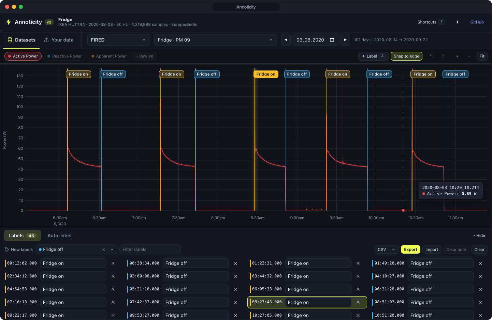
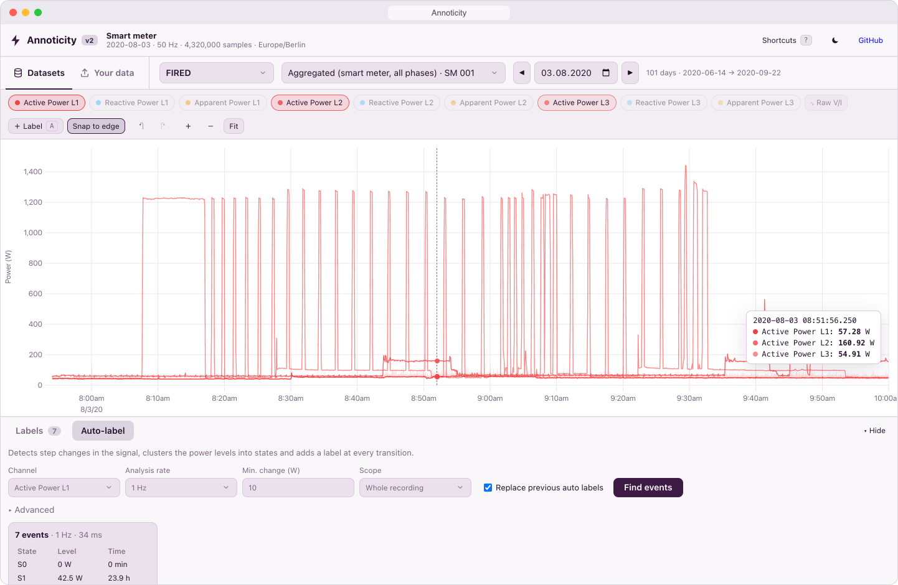
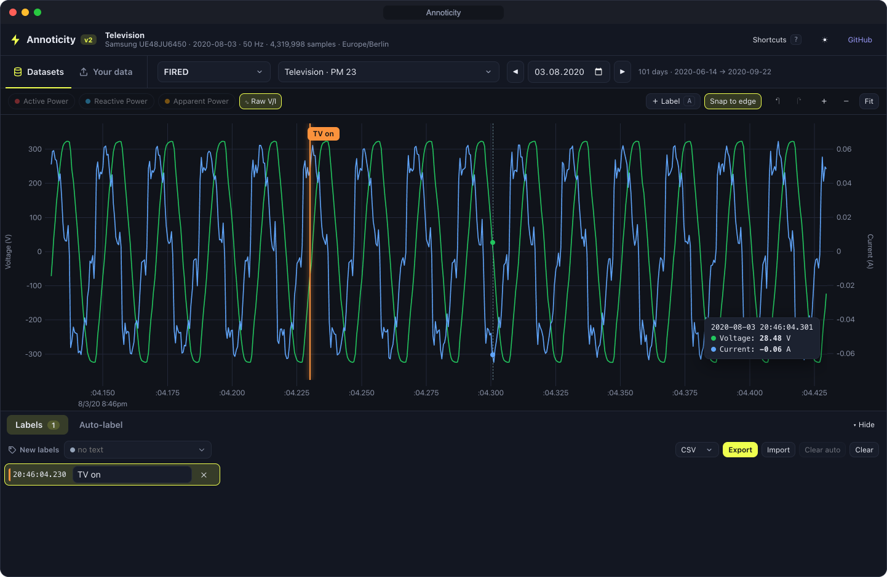
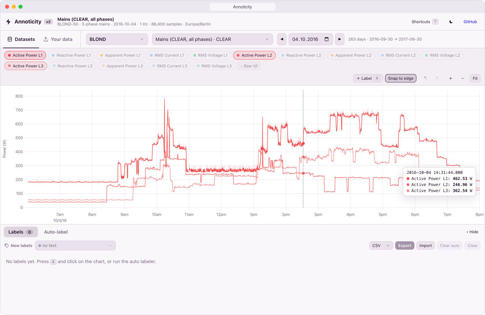

‹ All apps
Annoticity
Browse and label electricity datasets in your browser.
Screenshots

Fridge cycles in FIRED, auto-labeled and renamed in one go.

Auto-labeling with state clustering.

Raw voltage and current when zoomed in.

Three-phase mains of the BLOND office dataset.
Features
- Public datasetsFIRED and BLOND straight from their servers, plus REDD, UK-DALE and ECO from a local copy.
- Your own dataDrop a CSV or a FIRED-style MKV file.
- Fast plotFull-resolution zoom and pan with min/max envelopes, so short spikes stay visible.
- Raw waveformsVoltage and current at up to 12.5 kHz when you zoom in.
- LabelsClick to add, drag, snap to edges, undo and redo, rename all labels with the same name.
- Auto-labelingStep detection and state clustering, running in the background.
- ExportCSV, SRT, ASS or JSON, and import them again.
- Light and darkBoth themes, plus keyboard shortcuts for the common actions.
Publication
Support